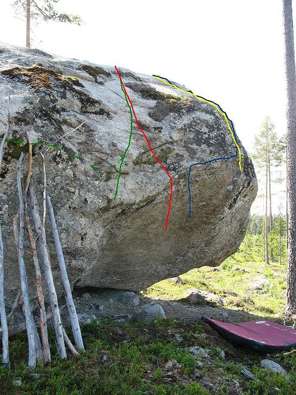
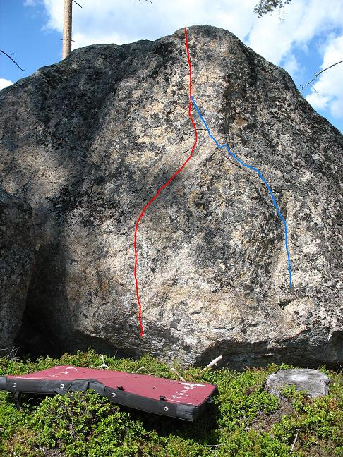

Sillerö
Beskrivning
Ett block med överhängande, travers och svaproblem. Blocket har potential till fler problem och det finns några mindre block i närheten som också kan hysa några projekt.
Projektera gärna.
Vägbeskrivning
Från riksväg 71 i Yttermalung ta in avtagsväg mot Tyngsjö och Sillerö. När du kommit in i Sillerö kommer du efter ett tag att se en mast på höger hand. ta då in vägen mot masten. Parkera på vänster sida av vägen in på en skogsbilväg.
Problem

-
- Lille skutt
- 5c
- Grön linje Lägre startgrepp än röd. Upp på slopers och lister, lite mantling på slutet. Kan nån få till sittstart så stiger nog graderna en aning!
-
- Stora stygga vargen
- 5c
- Röd linje Båda händerna på bra startgrepp, sedan rakt upp på blocket. Kan bli vasst åt underarmarna.
-
- Långa farbrorn
- 6c
- Blå linje Samma startgrepp som grön, blå linjen felritad ska starta längre till vänster. Traversering åt höger via en liten läpp. Lång sträckning alternativt sloping till bra grepp långt till höger. Sedan rakt upp, i samma avslut som gul.
-
- Bamse
- 5b
- Gul linje. Startgrepp högt upp. Är du kort så vik paddan dubbel. Sedan långa skick mot toppen.
-
- Projekt
- ?
- Travers projekt. Streckad grön linje.

-
- Tungan rätt i mun
- 5b
- Röd linje. Händerna bara på vänstra hyllan, sedan skick mot toppen. Balansig och lite avig.
-
- Värma
- 4b
- Röd+blå linje. Använd både vänster och höger hylla för händerna. Enkel men lite rolig.
Copyright (C) Permission is granted to copy, distribute and/or modify this document under the terms of the GNU Free Documentation License, Version 1.3